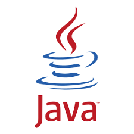
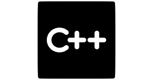
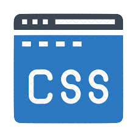

Skills
Programming Languages and Software Platforms
  
Hello! I'm Pranav Hariharane.
I am a sophomore at Purdue University pursuing a dual major in Computer Science and Data Science. I strive to learn how to create solutions to real-world problem through programming and the the many ways in which the analysis/processing of data can contribute to them.
I developed a program that parses a MIDI file’s contents into structs that hold the song’s information. The program reads in binary data from a MIDI file and converts that data into human-readable information that can be used to play the song on a device. I implemented the program using C and it required efficient use of pointers, memory management, structs, linked lists, binary search trees, functional programming, matrices, and loops.
I created an airport interface that allows users to book tickets to different airlines and provides them with a visible boarding pass if they meet the restrictions. I used Servers for the interaction between the client and the airport interface. I also used GUI’s to show a visual demonstration of the user’s progress in the interface.
Throughout this job, I mainly supervised young kids from ages Kindergarten to 5th grade during their free time, such as lunch and recess, and prepared the projects held at the camp. I also frequently took part in enhancing the experience of the camp for the kids by helping them build devices that they didn't think they could create and gain the confidence to innovate and be creative. This exeperiece improved my communication skills as I learned how to work with people in a professional setting and talk to parents/guardians of children.
I helped coach kids from ages 5-14 years old in tennis group lessons. This meant conducting drills for the kids, rallying with the kids, and playing matches with them. Also, when the main head coaches were the ones feeding the kids balls to hit, I had to help the kids fix their mistakes and obtain the correct technique. Since the lessons were taught in huge groups, I had to play a huge role in disciplining individual kids since the head coaches didn't have time to deal with them.
I volunteered in the food kitchen where I mainly helped organize donated food into its corresponding shelves. I also distributed this food to clients of the organization that were in need of it. This opportunity taught me the importance of discipline, the power of a good community, and how our decisions can have long-lasting consequences on us. I also realized that it's not my place to judge anyone as many people are born with huge disadvantages in life and poverty is much more about circumstances and decisions than laziness.